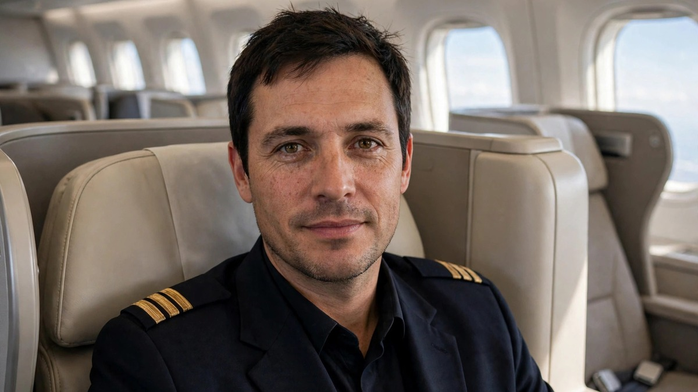

American pilots jump first class queue ahead of elites
American Airlines has confirmed that pilots travelling on duty can move ahead of waiting elite passengers for first class upgrades in the final 24 hours before departure, after a passenger photo of a uniformed pilot in first class sparked a debate online.

Sources: View from the Wing, TheTravel
American Airlines has confirmed that pilots can receive first class upgrades ahead of its elite passengers in certain cases, after a passenger posted a photo of a uniformed pilot seated in first class on October 22. The passenger complained that employees were taking seats ahead of paying customers, comparing it to Apple letting staff buy new phones first or shop workers taking the parking spaces closest to the store. American replied on social media that pilot upgrades are limited to the 24 hours before departure, and that before that window, upgrades for its AAdvantage members are cleared through the normal process.
Read More
American said the priority applies to deadheading pilots. Deadheading means the airline is moving a pilot as a passenger to the place where that pilot needs to operate a flight, or back to base after a trip. It is different from a pilot commuting to a home base or travelling for personal reasons. Under the pilot contract agreed in 2023, a deadheading pilot goes to the top of the upgrade list at check in, within 24 hours of departure, ahead of customers who are still waiting for an upgrade, including the airline's top elite members.
Upgrades that were already cleared before the 24 hour window are not affected, and pilots are not given a confirmed first class seat in advance. American said all upgrades remain subject to premium seat availability, in line with practice across the industry. The airline also said its standard process for clearing AAdvantage upgrades before the 24 hour point stays in place. Delta and United have similar pilot upgrade arrangements, although American's version is more visible to customers because the pilot is often seen in uniform taking the last open seat at the airport.
The issue has drawn attention because American now clears fewer upgrades in advance, preferring to sell remaining first class seats for tens of dollars, with reported upgrade offers of 26 or 40 dollars. That leaves fewer seats in the upgrade pool for frequent flyers, even for travellers who spend tens of thousands of dollars a year with the airline. Delta reports that about 12 percent of its first class seats go to upgrades, while the industry average twenty years ago was selling only about 10 percent of those seats, according to the coverage.
Online reaction has been split. Some replies said pilots should come first, that a rested crew matters, and that anyone who wants first class should buy it. Others said customers come first, because passengers fund the airline, and that loyalty status should mean more when a seat is still open. American has not changed the policy in its public reply. It described the arrangement as part of the pilot agreement it signed, and said the standard upgrade process for customers before the final day remains unchanged.
What People Say
That pilot in first could be traveling to an airport where he will then fly me somewhere- I’ll happily take a happy/rested pilot 😄
It’s a pilot rest requirement. How many times does this have to come up? Its not just American. All the airlines do it
Not sure how people can complain about a seat they did not pay for,they only get upgraded if they are deadheading to another city to immediately operate a flight
Many companies pay for first class for their important employees that have to travel often. United, Delta and American think their pilots are important enough to put in first class.
The customer comes first in this case. This is common sense. The idea that we’re glamorizing pilots to be so important they should automatically get the better seat is silly. Customers are the reason you get a paycheck, I’d probably keep them happy.
 Airport self-checkout asks passenger to tip 18% for a water bottle
Airport self-checkout asks passenger to tip 18% for a water bottle Woman sobs for three hours on 10-hour flight after seatmate refuses seat swap
Woman sobs for three hours on 10-hour flight after seatmate refuses seat swap Malaysia Airlines resumes Jeddah and Madinah flights
Malaysia Airlines resumes Jeddah and Madinah flights